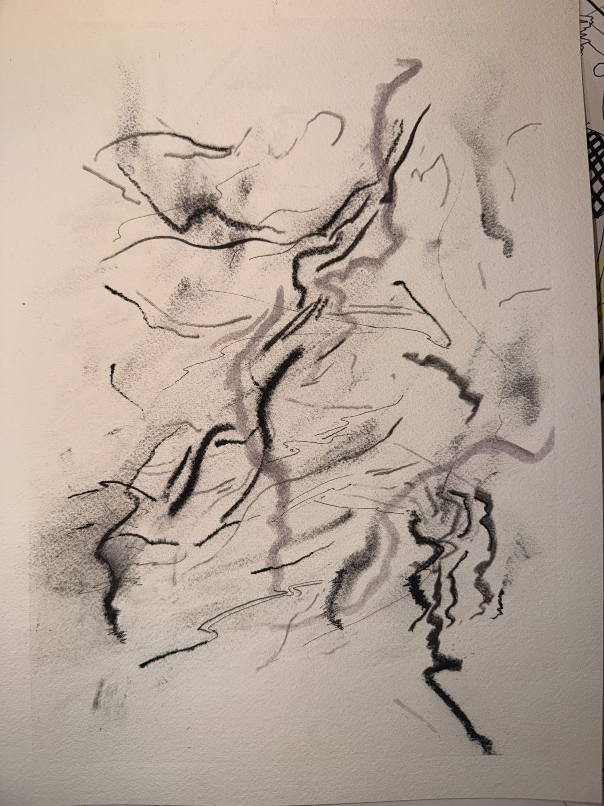

Sat, Jul 4
thinking today
Here we go. It is Sat Jul 4 16:46 and I am in Thymer, while also, writing my first blog post. To my website.
Let's see.

Here we go. It is Sat Jul 4 16:46 and I am in Thymer, while also, writing my first blog post. To my website.
Let's see.
